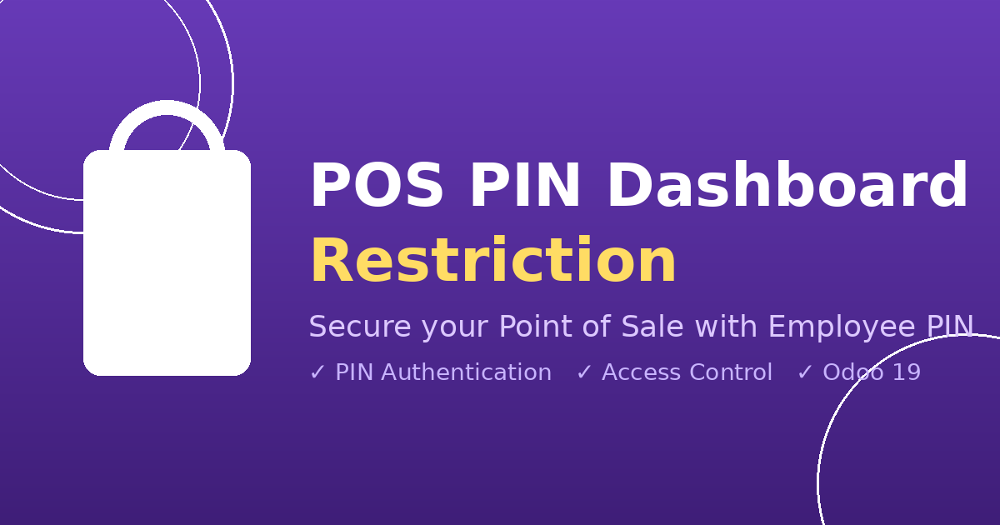

This module requires employees to enter their PIN before accessing the POS Dashboard. It ensures that only authorized employees can view and manage their assigned POS configurations.
This module depends on: point_of_sale, hr, pos_hr
Developed by Antigravity — Licensed under LGPL-3